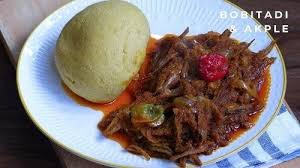

Akple (Fermented Corn & Cassava Dough Dumpling)

Description
Akple is a traditional Ghanaian staple, primarily associated with the Ewe people.
Made from a blend of fermented corn and cassava dough, it's typically served with
okra soup or ground pepper and fish. Soft, smooth, and filling, it's a core part
of southern Ghanaian cuisine.
Ingredients:
- 2 cups fermented corn dough
- 1 cup cassava dough
- 4 cups water
- Salt (to taste)
Steps:
- Mix the corn and cassava dough together in a large saucepan.
- Add water gradually while stirring to form a smooth, lump-free mixture.
- Place the mixture over medium heat. Stir continuously with a wooden spatula (ta).
- As it thickens, add a little water, cover, and let it simmer for a few minutes.
- Stir again vigorously to ensure it's well-cooked and stretchy.
- Mold into balls using a bowl and serve hot with okra soup, ground pepper, or fish stew.
Back To Home Page